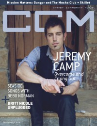

CCM Digital
Sep 2010
| Cover |
|---|
|  |
 Online Exclusively Online Exclusively |
| Writers in this Issue |
| Argyrakis, Andy Cartwright, Grace C. Conner, Matt Ferguson, Rachel Greer, Andrew Haley, Adria Hoernschemeyer, Emily Jackson, Tom Lusk, Caroline |
Jeremy Camp
Cover Feature:- "Crying Out, Bowing Down"
- "Sea Songs"
- "Unplugged: A pop princess goes au naturel" by Emily Hoernschemeyer
- "Abounding Love: Singing Praises to the Defender of Our Hearts" by Emily Hoernschemeyer
- Israel Houghton by Caroline Lusk
- Skillet by Andrew Greer
- VaShawn Mitchell by Andrew Greer
- Vlada by Matt Conner
- Disciple by Andy Argyrakis
- Caedmon's Call by Andy Argyrakis
- The Choir by Andy Argyrakis
- Sixpence None the Richer by Andrew Greer
- "Tackling the singer's most important instrument: The Voice" by Caroline Lusk
- "Forgiven"
- by Tom Jackson
- "How Music Speaks Healing and Hope" by Rachel Ferguson
- Jeremy Camp - We Cry Out: The Worship Project by Grace C. Cartwright
- Sandi Patty - The Edge of the Divine by Andy Argyrakis
- Lincoln Brewster - Real Life by Matt Conner
- Michael W. Smith - Wonder by Andy Argyrakis
- Bebo Norman - Ocean by Matt Conner
- The Afters - Light Up The Sky by Grace C. Cartwright
- Disciple - Horseshoes & Handgrenades by Grace C. Cartwright
- Chris Sligh - The Anatomy of Broken by Matt Conner
- House of Heroes - Suburba by Matt Conner
- Aaron Crider - The Change by Andrew Greer
- The Choir - Burning Like The Midnight Sun by Andy Argyrakis
- Johnson Roberts - Theory of Colour by Andrew Greer
- Jonathan Nelson - Better Days by Andrew Greer
- Grits - Quarantine by Andrew Greer
- Israel Houghton - Love God. Love People. by Andy Argyrakis
- U2 - 360º At The Rose Bowl by Andy Argyrakis
- The Arcade Fire - The Suburbs by Matt Conner
- Randy Travis - I'll Fly Away by Andrew Greer
- "Blink Tour, Grace Community Church, Streator, IL" by Andy Argyrakis
- Momentum conference, Christian Music Broadcasters by Emily Hoernschemeyer
- "When Worship Meets Love" by Grace C. Cartwright
- "Life, loss and learning to see the hope of a sovereign God" by Caroline Lusk
- "Macha Club... It's a beautiful thing" by Adria Haley
© 2011 CMnexus. Last updated May 2025. Contact: editor -AT- cmnexus -DØT- org